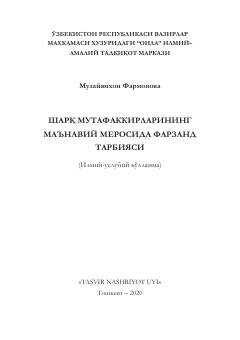

SMSharq mutafakkirlarining boy маъnaviy merosi asosida фарзанд tarbiyalash usullari bayon etilgan.
Mazkur илмий-услубий қўлланмада шарқ мутафаккирларининг оила, унда фарзанд тарбияси, ёш авлодни ҳар томонлама етук ва ватанпарвар этиб камол топтириш ҳақидаги қарашлари баён этилган. Қўлланма оилалар, ёш ота-оналар, таълим муассасалари ходимлари ҳамда кенг жамоатчиликка мўлжалланган.